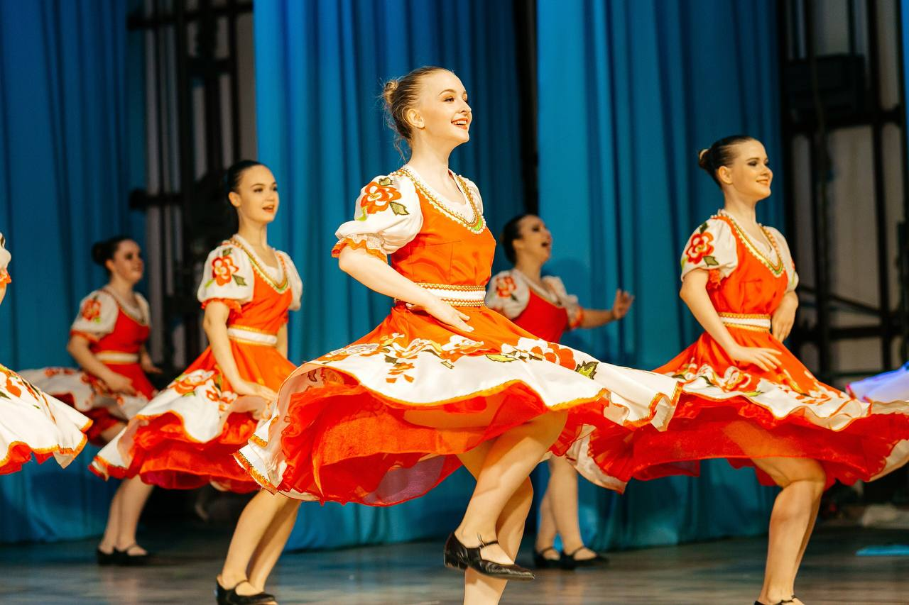
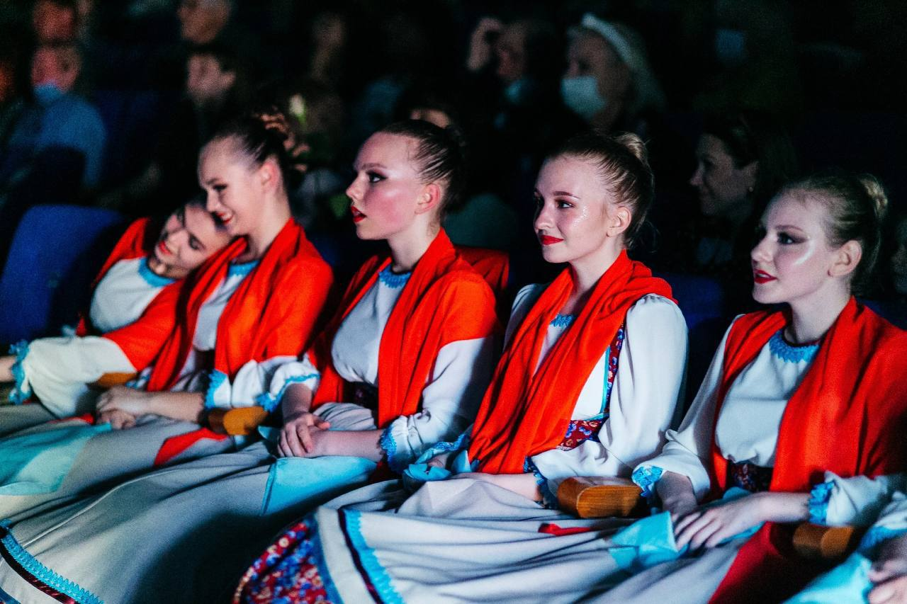

Что объединяет народы России? Ищем ответ в танце — в его кругах, костюмах, праздниках и ритмах.


Восемь народов из разных уголков страны — от Кавказа до Якутии. У каждого — свой танец и свой праздничный наряд.
Танцы непохожи с первого взгляда. Но если присмотреться, их связывают одни и те же нити.
Русский хоровод, якутский осуохай, бурятский ёхор, эвенкийский хэйро — народы, живущие за тысячи километров друг от друга, танцуют одинаково: в кругу, держась за руки. В круге нет первых и последних, каждый — часть целого. Это и есть образ единства.
Ансамбли народного танца показывают традиции разных народов зрителям всей страны и мира.
Танцы разных народов звучат по-разному, но говорят об одном: о любви к родной земле, уважении к старшим, радости общего праздника. Круг хоровода, осуохая и ёхора — это образ страны, где каждый народ держит за руку соседа. Разнообразие танцев не разделяет, а обогащает нас.
Откуда взяты изображения на сайте.